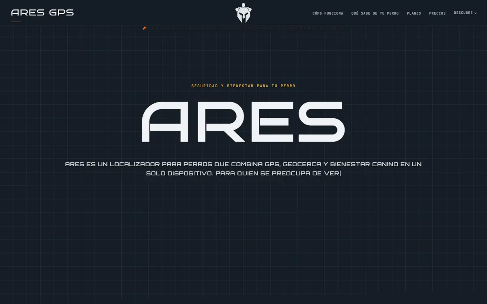
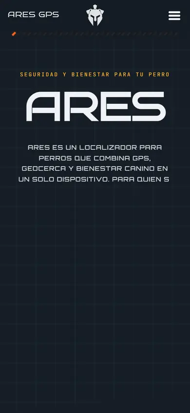
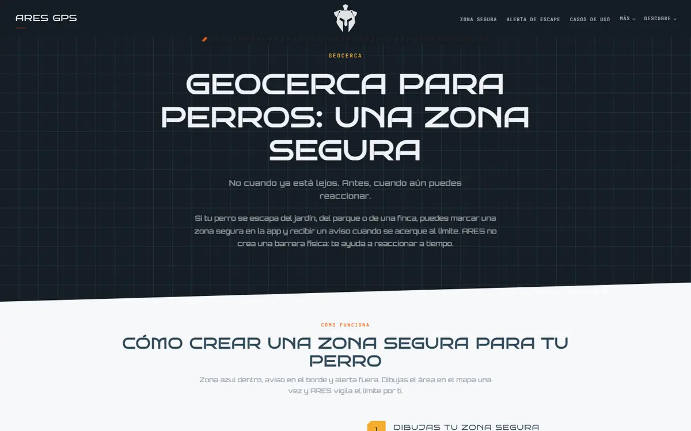
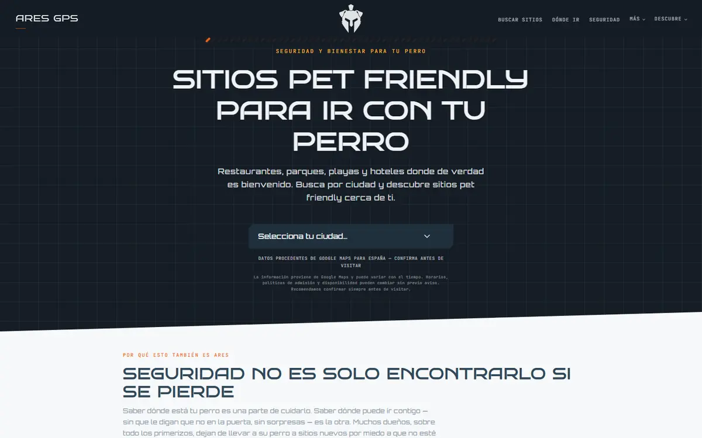

Para quién
- Dueños de perros que salen al monte, a fincas o a zonas con poca cobertura
- Quien quiere saber no solo dónde está su perro, sino cómo está cada día
Localizador GPS para perros con conexión propia: te dice dónde está tu perro y cómo está cada día (actividad y descanso). Estoy diseñando el producto entero: dispositivo, aplicación y web.
La web es pública. El dispositivo está en desarrollo y todavía no se vende.
Dos miedos de cualquier dueño: que el perro se pierda y no saber si está bien. La mayoría de localizadores dependen del móvil y se quedan sin señal en el monte.
Y lo segundo se nota tarde: cuando un perro duerme peor o se mueve menos, normalmente lleva días así antes de que el dueño se dé cuenta.
ARES junta las dos cosas en un solo aparato en el collar: saber dónde está y saber cómo está.
El collar lleva su propia SIM y conexión 4G, así que no depende de tu móvil: puedes verlo desde la oficina o desde otro país.
Si ninguno de los dos tiene internet, el collar se conecta a tu teléfono por Bluetooth y la app te guía hacia él, en modo frío o caliente.
Combina el GPS con el sensor de movimiento para distinguir si ha corrido él o iba en el coche, y avisa si se cae o se queda quieto de golpe.
Dibujas una zona segura en el mapa y ARES te avisa cuando se acerca al borde, no cuando ya está lejos. También te frena si hace demasiado calor para pasear.
Se duerme cuando el perro está quieto o reconoce el WiFi de casa, y se despierta en cuanto se mueve.




Basado en ESP32-S3, con GPS de varios sistemas de satélites, sellado IP68 e IK10 sin puertos, carga magnética y unos 64 g de peso.
Doce luces de color visibles a más de 50 metros, con tres modos: paseo, búsqueda y aviso de estado.
Modelo 3D animado, guías de actividad, descanso, nutrición y alimentos tóxicos, calculadora de peso ideal y mapa de sitios pet friendly por ciudad.
Actividad real, calorías y horas de descanso. Con Premium, cruza la comida con la actividad para proponer una dieta para ese perro.
Diseño el producto entero:
Web pública con guías y herramientas para dueños. El dispositivo está en diseño y todavía no se vende.
El prototipo funcional del collar y probarlo con perros reales.